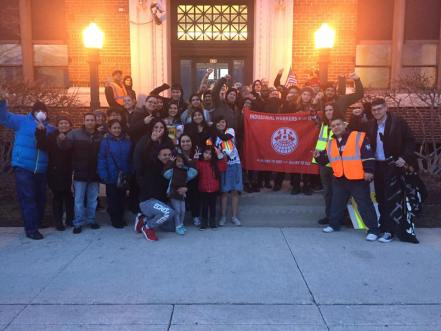

Submitted on Mon, 05/08/2017 - 8:30pm
By Patrick O’Donoghue - The Organizer, May 1, 2017
A Day of Resistance!
Today is May Day, or as we in the labor movement call it, International Worker’s Day- a day of celebration and resistance for working class people. It is a day not only of looking forward to the future, but also remembering the lessons of the past. May Day commemorates the struggle of the Haymarket Martyrs, a group of labor organizers, most of them immigrants, executed in Chicago for their work in the Eight Hour Day movement. The Eight Hour Day was the first time that workers around the world joined together in one campaign, supporting each other’s strikes and protests around a single demand- reduce the work day to eight hours, without a cut in pay. The movement faced violence and arrests from governments, but eventually won in country after country. The eight hour day became the basic work day for workers across the countries where the movement fought, with victories across Europe, North and South America, Australia, Iran, Japan, and elsewhere. Over a century ago, workers realized the power we have when we refuse to be divided by borders, industry, or race.
This May Day is also the Day Without Immigrants. It is the latest in a wave of of day strike by immigrant workers- not only to protest wages and work conditions, but also to protest the Trump’s plans to increase deportations. Under the Trump’s ramping up of the Obama administration’s already record-breaking deportations, ICE has increasingly targeted previously protected DREAMers and other undocumented people not otherwise criminalized by the state. ICE raids are becoming more regular even in “Sanctuary Cities”, and more of our neighbors, coworkers, family, and friends are being captured, torn from their homes, forced through over-crowded detention centers and courts without due process.
In the Twin Cities, many of the actions today are organized by CTUL, the workers center for low wage workers of color, especially immigrant workers. Even more of the walk outs and sick outs are “wildcat” actions organized on the shop floor between undocumented workers, without needing the go-ahead from a union or organizer.
By striking, these undocumented workers are showing how important they are to making the world run. How many restaurants are shut down today because the back end staff didn’t come in? How many landscapers and construction companies who rely on day laborerers are not making money today? How many farm fields aren’t being worked? Every day, undocumented immigrant workers do some of the toughest jobs in America, and the country starts to grind to a halt without immigrant workers. Deportations crackdowns have already left millions of dollars of produce to rot in the fields in Alabama, Georgia, and California as farmers dependent on exploiting undocumented workers can’t find Americans to work for as low as $10,000-$12,000 a year. The four industries with the most undocumented workforce- agriculture, cleaning and maintenance, construction, and food preparation and service- are all expecting labor shortages if Trump’s deportation plan is carried out. American companies and bosses need our immigrant fellow workers- but the administration and parts of the press try to tell workers who are citizens that undocumented workers are hurting American working standards. Nothing could be further from the truth.
 On April 30
On April 30